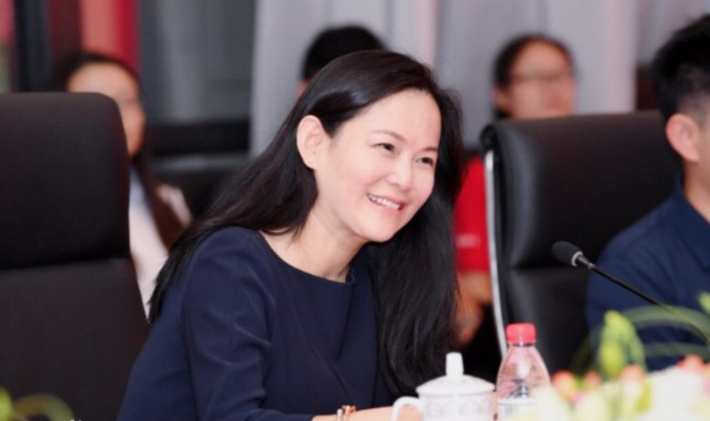
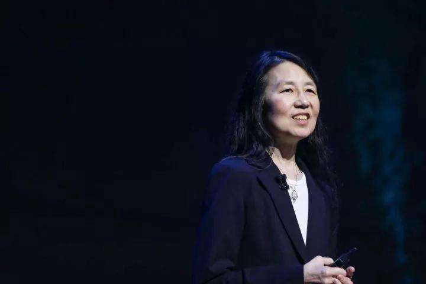
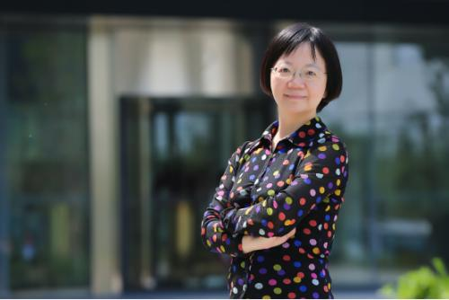

Dongmin Ma: One of the founders of Baidu
In the 2014 Hurun Women's Rich List, Ma Dongmin ranked fifth with a value of 22.5 billion in wealth and became the “dark horse” on the list.
Ma Dongmin, Hefei, Anhui, Ph.D. in biology, Baidu CEO Li Yanhong, graduated from the China University of Science and Technology Junior Class, graduated from the country at the age of 19, and was known as the "princess" in the New York student circle, one of Baidu's founders.
Yizhen Zhou: Computer scientist in karate black belt
Senior Vice President of Microsoft Worldwide. He led a global network of research laboratories from Boston to Bangalore. She has long advocated interdisciplinary collaborative research and will continue to expand the impact of the Data Science Institute on research and education, from precision medicine and public policy to humanities and industry.

Feifei Li:Tenured Professor of Computer Science, Stanford University
Feifei Li is one of the ancestors in the field of artificial intelligence image recognition. In 2015, he was selected as one of the “Top 100 Thinkers of the World” in 2015. Li Feifei led the team to create ImageNet, the world's largest image recognition database, which has greatly promoted the wave of deep learning.
Wu Hua: Female scientist behind Baidu translation
Wu Hua, Chairman of Baidu Technical Committee and Chief Scientist of Baidu Natural Language Processing Department. His main research areas include natural language processing, machine translation, human-machine dialogue, knowledge mining, and machine learning. She was awarded Forbes "AI Outstanding Women" in 2017.
